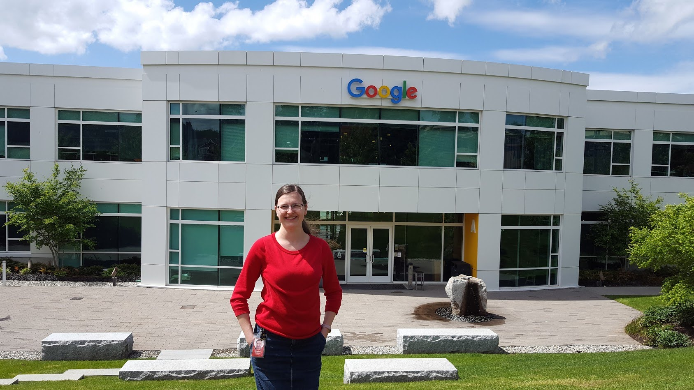

Hanna Kavaleva
My Portfolio
About
 In my journey from Eastern Europe to the United States in 2012, I found my home in the vibrant Seattle area, where I spent 10 out of the past 11 years. One year was spent in the bustling Silicon Valley, California, where I had the opportunity to intern at a tech company in San Mateo. It was an exciting and eye-opening experience that fueled my passion for the tech industry.For the past eight years, I've immersed myself in the world of quality assurance engineering, working on enterprise projects in well-established companies and diving into the wild and exhilarating startup environment. It's been a thrilling ride, filled with learning opportunities and the chance to contribute to cutting-edge software products.
In early 2023, I made a bold decision to leave my job and pursue a full-time college education, embarking on a journey to obtain a degree in Software Development. It's a step I took to further deepen my knowledge and broaden my skill set in the ever-evolving tech landscape.
During this transitional period, I also embraced my entrepreneurial spirit and started a non-IT business. It's been an exciting venture, allowing me to explore different aspects of business management and challenge myself in new ways.
When I'm not immersed in work or studies, I find joy in the simple pleasures of life. I love delving into non-fiction books, connecting with friends and relatives, expressing myself through playing musical instruments, and embracing the beauty of the great outdoors.
Life is an adventure, and I'm thrilled to be on this ever-evolving journey of personal and professional growth, continuously pushing my boundaries and embracing new opportunities along the way.